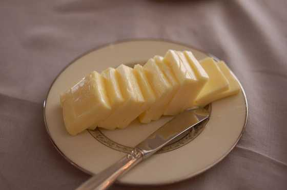

BAKERY / 岐阜県土岐市
ベーカリーたま5150
みなさまに、喜んでもらえるパン屋を。
土岐市のテラスゲート土岐まちゆい内にあるパン屋です。食べてくれる人の笑顔を思い浮かべながら焼く、そんなお店の想いを軸にご案内します。


ABOUT
喜んでもらえるパン屋でありたい。
ベーカリーたま5150は、2024年10月1日に岐阜県土岐市のテラスゲート土岐まちゆい内でオープンしたパン屋さんです。Instagramでは「みなさまに、喜んでもらえるパン屋を」という言葉が掲げられています。
- 2024年10月1日オープン(Instagramより)
- ふるさと納税の返礼品として食パンセットを出品
- 「たまパン教室」やネット販売の取り組み(Instagramのハイライトより)
店名の「たま」「5150」の意味は確認できていません。ここでは断定せず、由来は載せていません。


BREAD
おいしいが、ならぶ。
ふるさと納税の返礼品では、次の7種類の食パンから選べる形で出品されています(ふるさと納税サイトより)。店頭の品ぞろえ・価格は準備中です。

食パン 7種
プレーン / チョコ / たっぷりレーズン / 抹茶あずき / シナモンりんご / ほうじ茶甘栗 / 紅茶ホワイトチョコ

店頭のパン
準備中

トーストにも
バターやジャムとの相性もイメージしています。

価格・営業時間
準備中

VOICE
こんな声が聞けたら。
イメージ例
食パンがふわっとして、朝ごはんが楽しみになりました。
ご来店のお客様(創作)イメージ例
どれにしようか迷うくらい種類があって、ついあれこれ選んでしまいます。
ご来店のお客様(創作)イメージ例
お買い物のついでに寄れて、手土産にもぴったりでした。
ご来店のお客様(創作)上記は制作側が作成したイメージ例で、実在のお客様の声ではありません。
ACCESS
お店の場所
| 所在地 | 〒509-5127 岐阜県土岐市土岐ヶ丘4丁目5-3 テラスゲート土岐まちゆい内 |
|---|---|
| 電話 | 準備中 |
| 営業時間 | 準備中 |
| 定休日 | 準備中 |
| SNS | Instagram @bakery_tama5150 |